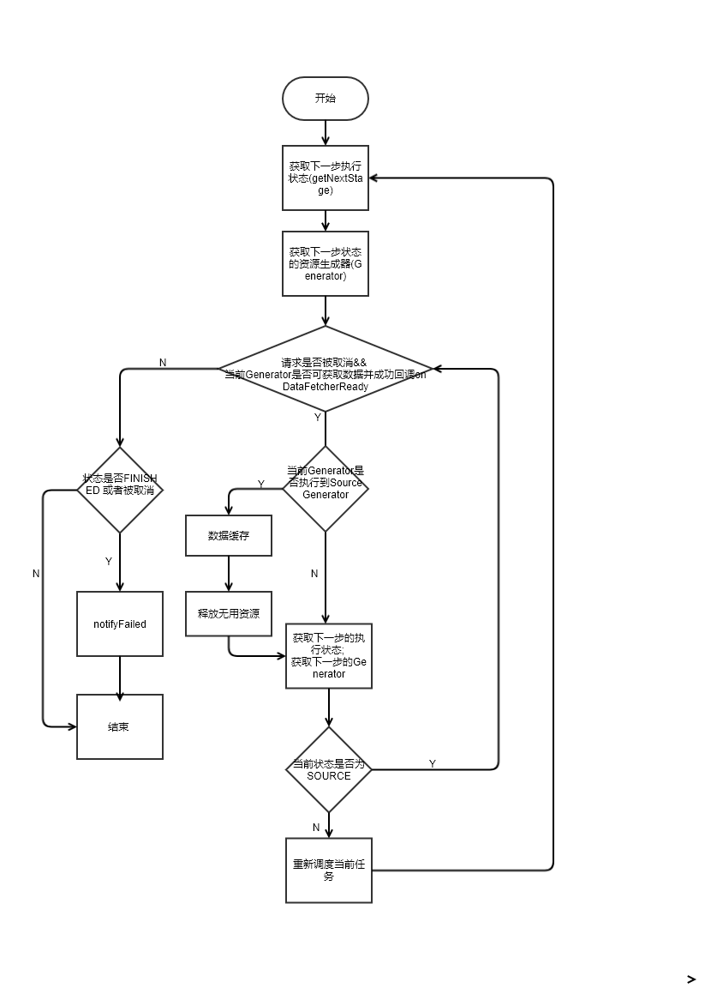

基于v4最新版本的Glide解析, 从最开始的简单加载开始看源码, 仅作个人记录.
一个Glide加载图片的核心用法如下:1
2
3GlideApp.with(this)
.load(uri)
.into(imageViewLookup);
我们通过一步步链式调用进去查看
Glide.with : 同步生命周期
1 | private RequestManager supportFragmentGet(@NonNull Context context, @NonNull FragmentManager fm, |
通过getSupportRequestManagerFragment(final FragmentManager fm, Fragment parentHint)方法调用, 在Glide.with(context)中传入的组件中,
新增一个子Fragment, 这个Fragment类根据传入的是support.fragment或者是fragment来决定是RequestManagerFragment还是SupportRequestManagerFragment,然后通过current.SupportRequestManagerFragment() 将Glide的生命周期与这个子fragment的声明周期绑定, 实现了组件与Glide加载同步的功能
图片的加载
我们通过暴露的into的API跳进去, 最终到了RequestBuilder.into(@NonNull Y target, @Nullable RequestListener<TranscodeType> targetListener, @NonNull RequestOptions options), 详细代码如下:1
2
3
4
5
6
7
8
9
10
11
12
13
14
15
16
17
18
19
20
21
22
23
24
25
26
27
28
29
30
31
32
33
34
35
36
37
38
39
40
41
42private <Y extends Target<TranscodeType>> Y into(
@NonNull Y target,
@Nullable RequestListener<TranscodeType> targetListener,
@NonNull RequestOptions options) {
// 判断是否在主线程
Util.assertMainThread();
// target是否为空判断
Preconditions.checkNotNull(target);
// load()方法是否已经被调用, 如果没被调用, 则将抛出异常
if (!isModelSet) {
throw new IllegalArgumentException("You must call #load() before calling #into()");
}
options = options.autoClone();
// 创建请求
Request request = buildRequest(target, targetListener, options);
// 获取target当前的请求
Request previous = target.getRequest();
// 如果请求相同, 而且当前请求设置可以使用内存缓存
// 则请求回收
if (request.isEquivalentTo(previous)
&& !isSkipMemoryCacheWithCompletePreviousRequest(options, previous)) {
request.recycle();
// If the request is completed, beginning again will ensure the result is re-delivered,
// triggering RequestListeners and Targets. If the request is failed, beginning again will
// restart the request, giving it another chance to complete. If the request is already
// running, we can let it continue running without interruption.
// 如果当前请求不在执行, 则会重新开始请求
if (!Preconditions.checkNotNull(previous).isRunning()) {
// Use the previous request rather than the new one to allow for optimizations like skipping
// setting placeholders, tracking and un-tracking Targets, and obtaining View dimensions
// that are done in the individual Request.
previous.begin();
}
return target;
}
requestManager.clear(target);
target.setRequest(request);
// 请求追踪
requestManager.track(target, request);
return target;
}
然后通过requestManager.track()发起Request执行, 如果当前状态(status)既不是RUNNING也不是COMPLETE, 则会执行onSizeReady, 到这里直到Engine.load()才开始资源的加载, 相关的代码及注释如下:1
2
3
4
5
6
7
8
9
10
11
12
13
14
15
16
17
18
19
20
21
22
23
24
25
26
27
28
29
30
31
32
33
34
35
36
37
38
39
40
41
42
43
44
45
46
47
48
49
50
51
52
53
54
55
56
57
58
59
60
61
62
63
64
65
66
67
68
69
70
71
72
73
74
75
76
77
78
79
80
81
82
83
84
85
86
87
88
89
90
91
92
93
94
95
96
97
98
99
100
101
102public <R> LoadStatus load(
GlideContext glideContext,
Object model,
Key signature,
int width,
int height,
Class<?> resourceClass,
Class<R> transcodeClass,
Priority priority,
DiskCacheStrategy diskCacheStrategy,
Map<Class<?>, Transformation<?>> transformations,
boolean isTransformationRequired,
boolean isScaleOnlyOrNoTransform,
Options options,
boolean isMemoryCacheable,
boolean useUnlimitedSourceExecutorPool,
boolean useAnimationPool,
boolean onlyRetrieveFromCache,
ResourceCallback cb) {
Util.assertMainThread();
long startTime = LogTime.getLogTime();
// 创建缓存key
EngineKey key = keyFactory.buildKey(model, signature, width, height, transformations,
resourceClass, transcodeClass, options);
// 从存活资源内读取数据, 内部缓存由value为弱引用对象的map做管理, 做手动的计数管理
// 当资源计数为0时, 则回收
EngineResource<?> active = loadFromActiveResources(key, isMemoryCacheable);
if (active != null) {
// 如果命中, 则回调加载
cb.onResourceReady(active, DataSource.MEMORY_CACHE);
if (Log.isLoggable(TAG, Log.VERBOSE)) {
logWithTimeAndKey("Loaded resource from active resources", startTime, key);
}
return null;
}
// 获取内存缓存数据
// 当内存缓存中有命中, 则删除Cache, 并将目标资源加到activeResources中
EngineResource<?> cached = loadFromCache(key, isMemoryCacheable);
if (cached != null) {
// 如果命中, 则回调加载
cb.onResourceReady(cached, DataSource.MEMORY_CACHE);
if (Log.isLoggable(TAG, Log.VERBOSE)) {
logWithTimeAndKey("Loaded resource from cache", startTime, key);
}
return null;
}
// EngineJob : 调度DecodeJob，添加，移除资源回调，并notify回调
EngineJob<?> current = jobs.get(key, onlyRetrieveFromCache);
// 当前存活的资源和内存缓存都没有的情况下
// 1. 先判断是否有资源(resouce什么时候回调true 不明), 如果有, 则回调加载
// 2. 如果加载失败, 则加载抛出异常
// 3. 否则, 在资源回调中添加
if (current != null) {
current.addCallback(cb);
if (Log.isLoggable(TAG, Log.VERBOSE)) {
logWithTimeAndKey("Added to existing load", startTime, key);
}
// 返回当前的LoadStatus
return new LoadStatus(cb, current);
}
// 当资源回调中都没有的情况
EngineJob<R> engineJob =
engineJobFactory.build(
key,
isMemoryCacheable,
useUnlimitedSourceExecutorPool,
useAnimationPool,
onlyRetrieveFromCache);
// 实现了Runnable接口，调度任务的核心类，整个请求的繁重工作都在这里完成：处理来自缓存或者原始的资源，应用转换动画以及transcode。
// 负责根据缓存类型获取不同的Generator加载数据，数据加载成功后回调DecodeJob的onDataFetcherReady方法对资源进行处理
DecodeJob<R> decodeJob =
decodeJobFactory.build(
glideContext,
model,
key,
signature,
width,
height,
resourceClass,
transcodeClass,
priority,
diskCacheStrategy,
transformations,
isTransformationRequired,
isScaleOnlyOrNoTransform,
onlyRetrieveFromCache,
options,
engineJob);
jobs.put(key, engineJob);
engineJob.addCallback(cb);
engineJob.start(decodeJob);
if (Log.isLoggable(TAG, Log.VERBOSE)) {
logWithTimeAndKey("Started new load", startTime, key);
}
return new LoadStatus(cb, engineJob);
}
这里的流程图可以看下图:
资源图片的缓存
当无法再当前存活的资源以及缓存内找到对应key的资源时, 会通过engineJob开始执行decodeJob, 所以我们可以直接看decodeJob的run().1
2
3
4
5
6
7
8
9
10
11
12
13
14
15
16
17
18
19
20
21
22
23
24/**
* 根据不同的runReason执行不同任务
*/
private void runWrapped() {
switch (runReason) {
// 首次请求时
case INITIALIZE:
stage = getNextStage(Stage.INITIALIZE);
currentGenerator = getNextGenerator();
// load数据
runGenerators();
break;
case SWITCH_TO_SOURCE_SERVICE:
// load数据
runGenerators();
break;
case DECODE_DATA:
// 数据处理
decodeFromRetrievedData();
break;
default:
throw new IllegalStateException("Unrecognized run reason: " + runReason);
}
}
核心的执行流程如下代码:1
2
3
4
5
6
7
8
9
10
11
12
13
14
15
16
17
18
19
20
21
22
23
24
25
26
27
28
29/**
* 执行Generators
*/
private void runGenerators() {
// 获取当前线程
currentThread = Thread.currentThread();
startFetchTime = LogTime.getLogTime();
boolean isStarted = false;
// currentGenerator.startNext() : 从当前策略对应的Generator获取数据，数据获取成功则回调DecodeJob的onDataFetcherReady对资源进行处理。否则尝试从下一个策略的Generator获取数据
while (!isCancelled && currentGenerator != null
&& !(isStarted = currentGenerator.startNext())) {
stage = getNextStage(stage);
// 根据Stage获取到相应的Generator后会执行currentGenerator.startNext()，如果中途startNext返回true，则直接回调，否则最终会得到SOURCE的stage，重新调度任务
currentGenerator = getNextGenerator();
if (stage == Stage.SOURCE) {
// 重新调度当前任务
reschedule();
return;
}
}
// We've run out of stages and generators, give up.
if ((stage == Stage.FINISHED || isCancelled) && !isStarted) {
notifyFailed();
}
// Otherwise a generator started a new load and we expect to be called back in
// onDataFetcherReady.
}
我们看下DecodeJob的执行流程

总结
到这里, 整体的流程大致是搞清楚了, 至于说是缓存的原理机制, 在之前Engine.load()的方法内, 删除缓存的方法进去可以看到一个LruCache的类文件, 从名字可以推断是Glide自己实现的Lru算法作为缓存的处理, 关于Lru的算法原理, 在本篇内就不再做赘述了, 而ActiveCache用到了引用计数算法.
Glide用到了大量的抽象工厂类, 另外方法内经常是包括了十来个参数, 在阅读的经过上还是有点困难(对我而言).
相应的代码注释可看Github上我补充的注释